DanceGRPO: Unleashing GRPO on Visual Generation
1]ByteDance Seed 2]The University of Hong Kong \contribution[†]Corresponding authors \contribution[‡]Project lead
1]字节跳动 Seed 2]香港大学 \contribution[†]通讯作者 \contribution[‡]项目负责人
Recent advances in generative AI have revolutionized visual content creation, yet aligning model outputs with human preferences remains a critical challenge. While Reinforcement Learning (RL) has emerged as a promising approach for fine-tuning generative models, existing methods like DDPO and DPOK face fundamental limitations - particularly their inability to maintain stable optimization when scaling to large and diverse prompt sets, severely restricting their practical utility. This paper presents DanceGRPO, a framework that addresses these limitations through an innovative adaptation of Group Relative Policy Optimization (GRPO) for visual generation tasks. Our key insight is that GRPO’s inherent stability mechanisms uniquely position it to overcome the optimization challenges that plague prior RL-based approaches on visual generation. DanceGRPO establishes several significant advances: First, it demonstrates consistent and stable policy optimization across multiple modern generative paradigms, including both diffusion models and rectified flows. Second, it maintains robust performance when scaling to complex, real-world scenarios encompassing three key tasks and four foundation models. Third, it shows remarkable versatility in optimizing for diverse human preferences as captured by five distinct reward models assessing image/video aesthetics, text-image alignment, video motion quality, and binary feedback. Our comprehensive experiments reveal that DanceGRPO outperforms baseline methods by up to 181% across multiple established benchmarks, including HPS-v2.1, CLIP Score, VideoAlign, and GenEval. Our results establish DanceGRPO as a robust and versatile solution for scaling Reinforcement Learning from Human Feedback (RLHF) tasks in visual generation, offering new insights into harmonizing reinforcement learning and visual synthesis.
[Project Page]https://dancegrpo.github.io/ \checkdata[Code]https://github.com/XueZeyue/DanceGRPO
[项目主页]https://dancegrpo.github.io/ \checkdata[代码]https://github.com/XueZeyue/DanceGRPO
Recent advances in generative models—particularly diffusion models [1, 2, 3, 4] and rectified flows [5, 6, 7]—have transformed visual content creation by improving output quality and versatility in image and video generation. While pretraining establishes foundational data distributions, integrating human feedback during training proves critical for aligning outputs with human preferences and aesthetic criteria [8]. Existing methods face notable limitations: ReFL [9, 10, 11] relies on differentiable reward models, which introduce VRAM inefficiency in video generation and require several extensive engineering efforts, while DPO variants (Diffusion-DPO [12, 13], Flow-DPO [14], OnlineVPO [15]) achieve only marginal visual quality improvements. Reinforcement learning (RL)-based methods [16, 17], which optimize rewards as black-box objectives, offer potential solutions but introduce three unresolved challenges: (1) the Ordinary Differential Equations (ODEs)-based sampling of rectified flow models conflict with Markov Decision Process formulations; (2) prior policy gradient approaches (DDPO [18], DPOK [19]) show instability when scaling beyond small datasets (e.g., <100 prompts); and (3) existing methods remain unvalidated for video generation tasks.
生成模型（尤其是扩散模型 [1, 2, 3, 4] 与整流流 [5, 6, 7]）的最新进展提升了图像与视频生成的输出质量与通用性，改变了视觉内容的创作方式。尽管预训练奠定了基础数据分布，在训练中融入人类反馈对于使输出契合人类偏好与美学标准仍然至关重要 [8]。现有方法存在明显局限：ReFL [9, 10, 11] 依赖可微奖励模型，在视频生成中显存效率低下，且需要大量工程投入；而 DPO 系列变体（Diffusion-DPO [12, 13]、Flow-DPO [14]、OnlineVPO [15]）带来的视觉质量提升十分有限。基于强化学习（RL）的方法 [16, 17] 把奖励当作黑箱目标来优化，虽提供了可能的出路，却引入三个尚未解决的难题：（1）整流流模型基于常微分方程（ODE）的采样与马尔可夫决策过程的形式化相冲突；（2）先前的策略梯度方法（DDPO [18]、DPOK [19]）在超出小规模数据集（如提示词少于 100 条）时表现出不稳定性；（3）现有方法在视频生成任务上仍未得到验证。
This work addresses these gaps by reformulating the sampling of diffusion models and rectified flows via Stochastic Differential Equations (SDEs) and applying Group Relative Policy Optimization (GRPO) [20, 21] to stabilize the training process. In this paper, we pioneer the adaptation of GRPO to visual generation tasks through the DanceGRPO framework, establishing a "harmonious dance" between GRPO and visual generation tasks. Our key insight is that GRPO’s architectural stability properties provide a principled solution to the optimization instabilities that have limited previous RL approaches to visual generation.
本文通过随机微分方程（SDE）重新表述扩散模型与整流流的采样过程，并应用组相对策略优化（GRPO）[20, 21] 来稳定训练，从而弥补上述空白。我们率先通过 DanceGRPO 框架把 GRPO 适配到视觉生成任务，在 GRPO 与视觉生成任务之间建立起一场“和谐的共舞”。我们的核心认识是：GRPO 在架构层面的稳定性特质，为以往视觉生成 RL 方法所遭遇的优化不稳定问题提供了有原则的解决方案。
We extend a systematic study of DanceGRPO, evaluating its performance across generative paradigms (diffusion models, rectified flows) and tasks (text-to-image, text-to-video, image-to-video). Our analysis employs diverse foundation models [2, 22, 23, 24] and reward metrics to assess aesthetic quality, alignment, and motion dynamics. Furthermore, through the proposed framework, we discover insights regarding the rollout initialization noise, the reward model compatibility, the Best-of-N inference scaling, the timestep selection, and the learning on binary feedback.
我们对 DanceGRPO 展开系统性研究，评估其在不同生成范式（扩散模型、整流流）与不同任务（文本到图像、文本到视频、图像到视频）上的表现。分析覆盖多种基础模型 [2, 22, 23, 24] 与奖励指标，用以考察美学质量、对齐程度与运动动态。此外，借助所提出的框架，我们在轨迹采样初始化噪声、奖励模型兼容性、Best-of-N 推理扩展、时间步选择以及基于二值反馈的学习等方面获得了一些认识。
Our contributions can be summarized as follows:
我们的贡献概括如下：
Stability and Pioneering. We present the first discovery that GRPO’s inherent stability mechanisms effectively address the core optimization challenges in visual generation that have persistently hindered prior RL-based approaches. We achieve seamless integration between GRPO and visual generation tasks by carefully reformulating the SDEs, selecting appropriate optimized timesteps, initializing noise, and noise scales.
• 稳定性与开创性。我们首次发现，GRPO 内生的稳定性机制能有效应对视觉生成中的核心优化难题——这些问题长期困扰着先前的 RL 方法。通过仔细重述 SDE、选取合适的待优化时间步、初始化噪声与噪声尺度，我们实现了 GRPO 与视觉生成任务的无缝结合。
Generalization and Scalability. To our knowledge, DanceGRPO is the first RL-based unified application framework capable of seamless adaptation across diverse generative paradigms, tasks, foundational models, and reward models. Unlike prior RL algorithms, primarily validated on text-to-image diffusion models on small-scale datasets, DanceGRPO demonstrates robust performance on large-scale datasets, showcasing both scalability and practical applicability.
• 泛化性与可扩展性。据我们所知，DanceGRPO 是首个能够无缝适配不同生成范式、任务、基础模型与奖励模型的 RL 统一应用框架。此前的 RL 算法主要在文本到图像扩散模型的小规模数据集上验证，而 DanceGRPO 在大规模数据集上表现出稳健性能，兼具可扩展性与实用价值。
High Effectiveness. Our experiments demonstrate that DanceGRPO achieves significant performance gains, outperforming baselines by up to 181% across multiple academic benchmarks, including HPS-v2.1 [25], CLIP score [26], VideoAlign [14], and GenEval [27], in visual generation tasks. Notably, DanceGRPO also enables models to learn the denoising trajectory in Best-of-N inference scaling. We also make some initial attempts to enable models to capture the distribution of binary (0/1) reward models, showing its ability to capture sparse, thresholding feedback.
• 高有效性。实验表明，DanceGRPO 带来显著性能增益：在 HPS-v2.1 [25]、CLIP score [26]、VideoAlign [14] 与 GenEval [27] 等多个学术基准上，视觉生成任务的表现最高超出基线 181%。值得一提的是，DanceGRPO 还使模型能够学习 Best-of-N 推理扩展中的去噪轨迹。我们也做了若干初步尝试，让模型捕捉二值（0/1）奖励模型的分布，显示出其捕捉稀疏、阈值化反馈的能力。
Diffusion Model [1]. A diffusion process gradually destroys an observed datapoint over timestep , by mixing data with noise, and the forward process of the diffusion model can be defined as :
扩散模型 [1]。扩散过程在时间步 上通过将数据与噪声混合，逐步破坏观测数据点 ，扩散模型的前向过程可定义为：
| (1) |
and and denote the noise schedule. The noise schedule is designed in a way such that is close to clean data and is close to Gaussian noise. To generate a new sample, we initialize the sample and define the sample equation of the diffusion model given the denoising model output at time step :
其中 与 表示噪声调度。噪声调度的设计使 接近干净数据、 接近高斯噪声。生成新样本时，我们初始化样本 ，并定义在时间步 给定去噪模型输出 时扩散模型的采样方程：
| (2) |
where can be derived via Eq.(1) and then we can reach a lower noise level . This is also a DDIM sampler [28].
其中 可由式（1）导出，进而到达更低的噪声水平 。这也是 DDIM 采样器 [28]。
Rectified Flow [6]. In rectified flow, we view the forward process as a linear interpolation between the data and a noise term :
整流流 [6]。在整流流中，我们把前向过程视为数据 与噪声项 之间的线性插值：
| (3) |
where is always defined as a Gaussian noise. We define the as the "velocity" or "vector field". Similar to diffusion model, given the denoising model output at time step , we can reach a lower noise level by:
其中 始终定义为高斯噪声。我们把 定义为“速度”或“向量场”。与扩散模型类似，给定去噪模型在时间步 的输出 ，可通过下式到达更低的噪声水平 ：
| (4) |
Analysis. Although the diffusion model and rectified flow have different theoretical foundations, in practice, they are two sides of a coin, as shown in the following formula:
分析。尽管扩散模型与整流流的理论基础不同，在实践中二者实为一体两面，如下式所示：
| (5) |
For -prediction (a.k.a. diffusion model), from Eq.(2), we have , , , and . For rectified flows, we have , , , and from Eq.(4).
对于 预测（即扩散模型），由式（2）可得 、、 与 。对于整流流，由式（4）可得 、、 与 。
In this section, we first formulate the sampling processes of diffusion models and rectified flows as Markov Decision Processes. Then, we introduce the sampling SDEs and the algorithm of DanceGRPO.
本节先把扩散模型与整流流的采样过程形式化为马尔可夫决策过程，随后介绍采样 SDE 与 DanceGRPO 算法。
Denoising as a Markov Decision Process. Following DDPO [18], we formulate the denoising process of the diffusion model and rectified flow as a Markov Decision Process (MDP):
去噪作为马尔可夫决策过程。沿用 DDPO [18]，我们把扩散模型与整流流的去噪过程形式化为马尔可夫决策过程（MDP）：
| (6) |
where is the prompt, and is the probability from to . And is the Dirac delta distribution with nonzero density only at . Trajectories consist of timesteps, after which leads to a termination state. is the reward model, which is always parametrized by a Vision-Language model (such as CLIP [26] and Qwen-VL [29]).
其中 为提示词， 是从 转移到 的概率； 为狄拉克 delta 分布，其密度仅在 处非零。轨迹由 个时间步构成，之后 进入终止状态。 为奖励模型，通常由视觉—语言模型参数化（如 CLIP [26] 与 Qwen-VL [29]）。
Formulation of Sampling SDEs. Since GRPO requires stochastic exploration through multiple trajectory samples, where policy updates depend on the trajectory probability distribution and their associated reward signals, we unify the sampling processes of the diffusion model and rectified flows into the form of SDEs. For the diffusion model, as demonstrated in [30, 31], the forward SDE is given by: . The corresponding reverse SDE can be expressed as:
采样 SDE 的表述。由于 GRPO 需要通过多条轨迹样本进行随机探索，策略更新依赖于轨迹概率分布及其对应的奖励信号，我们把扩散模型与整流流的采样过程统一为 SDE 形式。对扩散模型，如 [30, 31] 所示，前向 SDE 为：。相应的反向 SDE 可写为：
| (7) |
where is a Brownian motion, and introduces the stochasticity during sampling.
其中 为布朗运动， 在采样过程中引入随机性。
Similarly, the forward ODE of rectified flow is: . The generative process reverses the ODE in time. However, this deterministic formulation cannot provide the stochastic exploration required for GRPO. Inspired by [32, 33, 34], we introduce an SDE case during the reverse process as follows:
类似地，整流流的前向 ODE 为：。生成过程在时间上反转该 ODE。然而这种确定性形式无法提供 GRPO 所需的随机探索。受 [32, 33, 34] 启发，我们在反向过程中引入如下 SDE 形式：
| (8) |
where also introduces the stochasticity during sampling. Given a normal distribution , we have . We can insert this into the above two SDEs and obtain the . More theoretical analysis can be found in Appendix 7.
其中 同样在采样过程中引入随机性。给定正态分布 ，我们有 。将其代入上述两个 SDE，即可得到 。更多理论分析见附录 7。
Algorithm. Motivated by Deepseek-R1 [20], given a prompt , generative models will sample a group of outputs from the model , and optimize the policy model by maximizing the following objective function:
算法。受 Deepseek-R1 [20] 启发，给定提示词 ，生成模型会从模型 中采样一组输出 ，并通过最大化下述目标函数来优化策略模型 ：
| (9) |
where , and is the policy function is MDP for output at time step , is a hyper-parameter, and is the advantage function, computed using a group of rewards corresponding to the outputs within each group:
其中 ， 是输出 在时间步 上 MDP 的策略函数， 为超参数， 为优势函数，由每组内输出对应的一组奖励 计算得到：
| (10) |
Due to reward sparsity in practice, we apply the same reward signal across all timesteps during optimization. While traditional GRPO formulations employ KL-regularization to prevent reward over-optimization, we empirically observe minimal performance differences when omitting this component. So, we omit the KL-regularization item by default. The full algorithm can be found in Algorithm 1. We also introduce how to train with Classifier-Free Guidance (CFG) [35] in Appendix 8. In summary, we formulate the sampling processes of diffusion model and rectified flow as MDPs, use SDE sampling equations, adopt a GRPO-style objective, and generalize to text-to-image, text-to-video, and image-to-video generation tasks.
由于实践中奖励稀疏，优化时我们在所有时间步上施加相同的奖励信号。传统 GRPO 表述用 KL 正则来防止奖励过优化，而我们实证发现省略该组件带来的性能差异极小，因此默认省略 KL 正则项。完整算法见算法 1。附录 8 还介绍了如何结合无分类器引导（CFG）[35] 进行训练。综上，我们把扩散模型与整流流的采样过程形式化为 MDP，采用 SDE 采样方程与 GRPO 风格的目标，并推广到文本到图像、文本到视频与图像到视频生成任务。
Initialization Noise. In the DanceGRPO framework, the initialization noise constitutes a critical component. Previous RL-based approaches like DDPO use different noise vectors to initialize training samples. However, as shown in Figure 8 in Appendix 11, assigning different noise vectors to samples with the same prompts always leads to reward hacking phenomena in video generation, including training instability. Therefore, in our framework, we assign shared initialization noise to samples originating from the same textual prompts.
初始化噪声。在 DanceGRPO 框架中，初始化噪声是关键一环。DDPO 等先前的 RL 方法使用不同的噪声向量来初始化训练样本。然而，如附录 11 图 8 所示，在视频生成中给相同提示词的样本分配不同噪声向量，总会引发奖励破解现象，包括训练不稳定。因此，本框架对源自同一文本提示词的样本分配共享的初始化噪声。
Timestep Selection. While the denoising process can be rigorously formalized within the MDP framework, empirical observations reveal that subsets of timesteps within a denoising trajectory can be omitted without compromising performance. This reduction in computational steps enhances efficiency while maintaining output quality, as further analyzed in Section 3.6.
时间步选择。尽管去噪过程可在 MDP 框架下严格形式化，实证观察表明，去噪轨迹中的部分时间步可以省略而不损害性能。减少计算步数能提升效率并保持输出质量，3.6 节将对此做进一步分析。
Incorporating Multiple Reward Models. In practice, we employ more than one reward model to ensure more stable training and higher-quality visual results. As illustrated in Figure 9 in Appendix, models trained exclusively with HPS-v2.1 rewards [25] tend to generate unnatural ("oily") outputs, whereas incorporating CLIP scores helps preserve more realistic image characteristics. Rather than directly combining rewards, we aggregate advantage functions, as different reward models often operate on different scales. This approach stabilizes optimization and leads to more balanced generations.
融合多个奖励模型。实践中我们使用不止一个奖励模型，以获得更稳定的训练与更高质量的视觉结果。如附录图 9 所示，仅用 HPS-v2.1 奖励 [25] 训练的模型倾向于生成不自然（“油润”）的输出，而引入 CLIP score 有助于保留更真实的图像特征。由于不同奖励模型的量纲往往不同，我们不直接相加奖励，而是聚合优势函数。这种做法能稳定优化，并带来更均衡的生成结果。
Extension on Best-of-N Inference Scaling. As outlined in Section 3.6, our methodology prioritizes the use of efficient samples—specifically, those associated with the top k and bottom k candidates selected by the Best-of-N sampling. This selective sampling strategy optimizes training efficacy by focusing on high-reward and critical low-reward regions of the solution space. We use brute-force search to generate these samples. While alternative approaches, such as tree search or greedy search, remain promising avenues for further exploration, we defer their systematic integration to future research.
在 Best-of-N 推理扩展上的延伸。如 3.6 节所述，我们的方法优先使用高效样本——具体是由 Best-of-N 采样选出的前 k 个与后 k 个候选。这种选择性采样策略聚焦解空间中高奖励区域与关键的低奖励区域，从而优化训练效率。我们用穷举搜索生成这些样本。树搜索、贪心搜索等替代方案虽有前景，我们将其系统性整合留待未来研究。
算法 1 DanceGRPO 训练算法
We verify the effectiveness of our algorithm in two generative paradigms (diffusion/rectified flow) and three tasks (text-to-image, text-to-video, image-to-video). For this, we choose four fundamental models (Stable Diffusion [2], HunyuanVideo [22], FLUX [23], SkyReels-I2V [24]) for the experiment. All of these methods can be precisely constructed within the framework of MDP during their sampling process. This allows us to unify the theoretical bases across these tasks and improve them via DanceGRPO. To our knowledge, this is the first work to apply the unified framework to diverse visual generation tasks.
我们在两种生成范式（扩散模型/整流流）与三类任务（文本到图像、文本到视频、图像到视频）上验证算法有效性。为此选取四个基础模型（Stable Diffusion [2]、HunyuanVideo [22]、FLUX [23]、SkyReels-I2V [24]）进行实验。这些方法的采样过程都能在 MDP 框架下精确构造，使我们能够统一各任务的理论基础，并通过 DanceGRPO 加以改进。据我们所知，这是首个把统一框架应用于多种视觉生成任务的工作。
We use five reward models to optimize visual generation quality: (1) Image Aesthetics quantifies visual appeal using a pretrained model fine-tuned on human-rated data [25]; (2) Text-image Alignment employs CLIP [26] to maximize cross-modal consistency between prompts and outputs; (3) Video Aesthetics Quality extends image evaluation to temporal domains using VLMs [14, 29], assessing frame quality and coherence; (4) Video Motion Quality evaluates motion realism through physics-aware VLM[14] analysis of trajectories and deformations; (5) Thresholding Binary Reward employs a binary mechanism motivated by [20], where rewards are discretized via a fixed threshold (values exceeding the threshold receive 1, others 0), specifically designed to evaluate generative models’ ability to learn abrupt reward distributions under threshold-based optimization.
我们用五个奖励模型来优化视觉生成质量：（1）图像美学，用一个在人工评分数据上微调的预训练模型量化视觉吸引力 [25]；（2）图文对齐，采用 CLIP [26] 最大化提示词与输出之间的跨模态一致性；（3）视频美学质量，用视觉语言模型 [14, 29] 把图像评价扩展到时间维度，考察帧质量与连贯性；（4）视频运动质量，通过具备物理感知的 VLM [14] 分析轨迹与形变来评价运动的真实感；（5）阈值化二值奖励，采用受 [20] 启发的二值机制，用固定阈值把奖励离散化（超过阈值记为 1，否则为 0），专门用于考察生成模型在基于阈值的优化下学习突变奖励分布的能力。
表 1：对齐方法在关键能力上的比较。VideoGen：对视频生成的泛化性。Scalability：对大规模提示词数据集的可扩展性。Reward ↑ 表示奖励显著提升。RFs：适用于整流流。No Diff-Reward：不需要可微奖励模型。
| Method | RL-based | VideoGen | Scalability | Reward ↑ | RFs | No Diff-Reward |
|---|---|---|---|---|---|---|
| DDPO/DPOK | ✔ | ✗ | ✗ | ✔ | ✗ | ✔ |
| ReFL | ✗ | ✗ | ✔ | ✔ | ✔ | ✗ |
| DPO | ✗ | ✔ | ✔ | ✗ | ✔ | ✔ |
| Ours | ✔ | ✔ | ✔ | ✔ | ✔ | ✔ |
As evidenced by our comprehensive capability matrix in Table 1, DanceGRPO establishes new standards for diffusion model alignment. Our method achieves full-spectrum superiority across all evaluation dimensions: (1) seamless video generation, (2) large-scale dataset scalability, (3) significant reward improvements, (4) native compatibility with rectified flows, and (5) independence from differentiable rewards. This integrated capability profile – unobtainable by any single baseline method (DDPO/DPOK/ReFL/DPO) – enables simultaneous optimization across multiple generative domains while maintaining training stability. More comparisons can be found in Appendix 9.
如表 1 的综合能力矩阵所示，DanceGRPO 为扩散模型对齐树立了新标准。本方法在全部评估维度上实现全方位领先：（1）无缝支持视频生成；（2）可扩展到大规模数据集；（3）奖励显著提升；（4）原生兼容整流流；（5）不依赖可微奖励。这一综合能力是任何单一基线方法（DDPO/DPOK/ReFL/DPO）都无法企及的，使模型能在保持训练稳定的同时跨多个生成领域同步优化。更多比较见附录 9。
Text-to-Image Generation. We employ Stable Diffusion v1.4, FLUX, and HunyuanVideo-T2I (using one latent frame in HunyuanVideo) as foundation models, with HPS-v2.1 [25] and CLIP score [26]—alongside their binary rewards—serving as reward models. A curated prompt dataset, balancing diversity and complexity, guides optimization. For evaluation, we select 1,000 test prompts to assess CLIP scores and Pick-a-Pic performance in Section 3.2. We use the official prompts for GenEval and HPS-v2.1 benchmark.
文本到图像生成。我们采用 Stable Diffusion v1.4、FLUX 与 HunyuanVideo-T2I（在 HunyuanVideo 中使用单个潜帧）作为基础模型，以 HPS-v2.1 [25] 与 CLIP score [26] 及其二值奖励作为奖励模型。优化由一个兼顾多样性与复杂度的精选提示词数据集引导。评估方面，我们选取 1,000 条测试提示词，在 3.2 节考察 CLIP score 与 Pick-a-Pic 表现；GenEval 与 HPS-v2.1 基准则使用官方提示词。
Text-to-Video Generation. Our foundation model is HunyuanVideo [22], with reward signals derived from VideoAlign [14]. Prompts are curated using the VidProM [36] dataset, and an additional 1,000 test prompts are filtered to evaluate the VideoAlign scores in Section 3.3.
文本到视频生成。基础模型为 HunyuanVideo [22]，奖励信号来自 VideoAlign [14]。提示词基于 VidProM [36] 数据集整理，另筛选 1,000 条测试提示词，用于 3.3 节评估 VideoAlign 分数。
Image-to-Video Generation. We use SkyReels-I2V [24] as our foundation model. VideoAlign [14] serves as the primary reward metric, while the prompt dataset, constructed via ConsisID [37], is paired with reference images synthesized by FLUX [23] to ensure conditional fidelity. An additional 1000 test prompts are filtered to evaluate the VideoAlign score in Section 3.4.
图像到视频生成。我们使用 SkyReels-I2V [24] 作为基础模型，VideoAlign [14] 作为主要奖励指标；提示词数据集通过 ConsisID [37] 构建，并与 FLUX [23] 合成的参考图像配对，以保证条件保真度。另筛选 1000 条测试提示词，用于 3.4 节评估 VideoAlign 分数。
Experimental Settings. We implemented all models with scaled computational resources appropriate to task complexity: 32 H800 GPUs for flow-based text-to-image models, 8 H800 GPUs for Stable Diffusion variants, 64 H800 GPUs for text-to-video generation systems, and 32 H800 GPUs for image-to-video transformation architectures. We develop our framework based on FastVideo [38, 39]. Comprehensive hyperparameter configurations and training protocols are detailed in Appendix 6. We always use more than 10,000 prompts to optimize the models. All reward curves presented in our paper are plotted using a moving average for smoother visualization. We use ODEs-based samplers for evaluation and visualization.
实验设置。我们按任务复杂度配置相应的计算资源：基于流的文本到图像模型使用 32 块 H800 GPU，Stable Diffusion 系列使用 8 块 H800 GPU，文本到视频生成系统使用 64 块 H800 GPU，图像到视频转换架构使用 32 块 H800 GPU。框架基于 FastVideo [38, 39] 开发。完整的超参数配置与训练流程详见附录 6。我们始终使用 10,000 条以上的提示词来优化模型。文中所有奖励曲线均采用滑动平均绘制，以便更平滑地呈现。评估与可视化使用基于 ODE 的采样器。
表 2：Stable Diffusion v1.4 上的结果。本表给出三种 Stable Diffusion 变体的表现：（1）基础模型；（2）用 HPS 分数训练的模型；（3）同时用 HPS 与 CLIP 分数优化的模型。评估中，HPS-v2.1 与 GenEval 分数使用各自官方提示词报告，CLIP score 与 Pick-a-Pic 指标则在我们的 1,000 条提示词测试集上计算。
表 3：FLUX 上的结果。本表给出 FLUX、用 HPS 分数训练的 FLUX 以及同时用 HPS 与 CLIP 分数训练的 FLUX 的结果，评估提示词与表 2 相同。
表 4：在扩散模型上、单独（非组合）使用 HPS 分数与 CLIP 分数训练的不同方法的比较。“Baseline”表示 Stable Diffusion 的原始结果。与 DDPO 的更多比较见附录 10。
| Approach | Baseline | Ours | DDPO | ReFL | DPO |
|---|---|---|---|---|---|
| HPS-v2.1 | 0.239 | 0.365 | 0.297 | 0.357 | 0.241 |
| CLIP Score | 0.363 | 0.421 | 0.381 | 0.418 | 0.367 |
表 5：HunyuanVideo 在 Videoalign 与 VisionReward 上的结果，训练时使用 VideoAlign VQ&MQ。“Baseline”表示 HunyuanVideo 的原始结果。我们使用 VisionReward-Video 概率的加权和。
| Benchmarks | VQ | MQ | TA | VisionReward |
|---|---|---|---|---|
| Baseline | 4.51 | 1.37 | 1.75 | 0.124 |
| Ours | 7.03 (+56%) | 3.85 (+181%) | 1.59 | 0.128 |
Stable Diffusion. Stable Diffusion v1.4, a diffusion-based text-to-image generation framework, comprises three core components: a UNet architecture for iterative denoising, a CLIP-based text encoder for semantic conditioning, and a variational autoencoder (VAE) for latent space modeling. As demonstrated in Table 2 and Figure 1(a), our proposed method, DanceGRPO, achieves a significant improvement in reward metrics, elevating the HPS score from 0.239 to 0.365, as well as the CLIP Score from 0.363 to 0.395. We also take the metric like the Pick-a-Pic [40] and GenEval [27] to evaluate our method. The results confirm the effectiveness of our method. Moreover, as shown in Table 3.1, our method exhibits the best performance in terms of metrics compared to other methods. We implement DPO as an online version following [15].
Stable Diffusion。Stable Diffusion v1.4 是基于扩散的文本到图像生成框架，包含三个核心组件：用于迭代去噪的 UNet 架构、用于语义条件控制的基于 CLIP 的文本编码器，以及用于潜空间建模的变分自编码器（VAE）。如表 2 与图 1（a）所示，本文提出的 DanceGRPO 在奖励指标上取得显著提升：HPS 分数从 0.239 提升到 0.365，CLIP Score 从 0.363 提升到 0.395。我们还采用 Pick-a-Pic [40] 与 GenEval [27] 等指标评估本方法，结果验证了其有效性。此外，如表 3.1 所示，本方法在各项指标上均优于其他方法。我们按 [15] 把 DPO 实现为在线版本。
Building on insights from rule-based reward models such as DeepSeek-R1, we conduct preliminary experiments with a binary reward formulation. By thresholding the continuous HPS reward at 0.28—assigning (CLIP score at 0.39) a value of 1 for rewards above this threshold and 0 otherwise, we construct a simplified reward model. Figure 3(a) illustrates that DanceGRPO effectively adapts to this discretized reward distribution, despite the inherent simplicity of the thresholding approach. These results indicate the effectiveness of binary reward models in visual generation tasks. In the future, we will also strive to explore more powerful rule-based visual reward models, for example, making judgments through a multimodal large language model.
借鉴 DeepSeek-R1 等基于规则的奖励模型的思路，我们对二值奖励形式做了初步实验：把连续的 HPS 奖励在 0.28 处阈值化（CLIP score 在 0.39 处），高于阈值记 1、否则记 0，从而构造一个简化的奖励模型。图 3（a）显示，尽管阈值化方法本身很简单，DanceGRPO 仍能有效适应这种离散化的奖励分布。这些结果表明二值奖励模型在视觉生成任务中是有效的。未来我们还将探索更强大的基于规则的视觉奖励模型，例如通过多模态大语言模型做出判断。
Best-of-N Inference Scaling. We explore sample efficiency through Best-of-N inference scaling using Stable Diffusion, as detailed in Section 2.2. By training the model on subsets of 16 samples (with the top 8 and bottom 8 rewards) selected from progressively larger pools (16, 64, and 256 samples per prompt), we evaluate the impact of sample curation on convergence dynamics about Stable Diffusion. Figure 4(a) reveals that Best-of-N scaling substantially accelerates convergence. This underscores the utility of strategic sample selection in reducing training overhead while maintaining performance. For alternative approaches, such as tree search or greedy search, we defer their systematic integration to future research.
Best-of-N 推理扩展。我们以 Stable Diffusion 为对象，按 2.2 节所述探索 Best-of-N 推理扩展下的样本效率。具体做法是：从逐渐扩大的候选池（每条提示词 16、64 与 256 个样本）中选取 16 个样本（奖励最高的 8 个与最低的 8 个）用于训练，以此评估样本筛选对 Stable Diffusion 收敛动态的影响。图 4（a）显示，Best-of-N 扩展显著加快了收敛，说明有策略的样本选择能在保持性能的同时降低训练开销。树搜索、贪心搜索等替代方案，我们将其系统性整合留待未来研究。
FLUX. FLUX.1-dev is a flow-based text-to-image generation model that advances the state-of-the-art across multiple benchmarks, leveraging a more complex architecture than Stable Diffusion. To optimize performance, we integrate two reward models: HPS score and CLIP score. As illustrated in Figure 1(b) and Table 3, the proposed training paradigm achieves significant improvements across all reward metrics.
FLUX。FLUX.1-dev 是基于流的文本到图像生成模型，架构比 Stable Diffusion 更为复杂，在多个基准上刷新了最先进水平。为优化性能，我们融合了 HPS score 与 CLIP score 两个奖励模型。如图 1（b）与表 3 所示，所提出的训练范式在所有奖励指标上都取得显著提升。
HunyuanVideo-T2I. HunyuanVideo-T2I is a text-to-image adaptation of the HunyuanVideo framework, reconfigured by reducing the number of latent frames to one. This modification transforms the original video generation architecture into a flow-based image synthesis model. We further optimize the system using the publicly available HPS-v2.1 model, a human-preference-driven metric for visual quality. As demonstrated in Figure 1(c), this approach elevates the mean reward score from about 0.23 to 0.33, reflecting enhanced alignment with human aesthetic preferences.
HunyuanVideo-T2I。HunyuanVideo-T2I 是 HunyuanVideo 框架的文本到图像改编版，通过把潜帧数量减至一帧改造而成，从而把原有的视频生成架构转变为基于流的图像合成模型。我们进一步使用公开的 HPS-v2.1 模型（一种由人类偏好驱动的视觉质量指标）对系统进行优化。如图 1（c）所示，该方法把平均奖励分数从约 0.23 提升到 0.33，反映出与人类美学偏好的契合度提高。
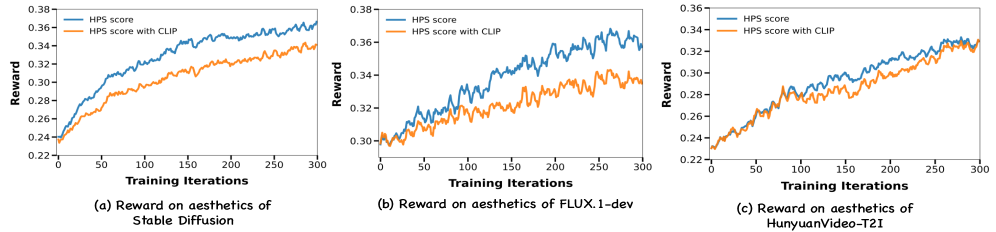
图 1：从左到右可视化 Stable Diffusion、FLUX.1-dev 与 HunyuanVideo-T2I 在 HPS 分数上的奖励曲线。加入 CLIP score 后 HPS 分数下降，但生成的图像更自然（见附录图 9），且 CLIP 分数提升（见表 2 与表 3）。
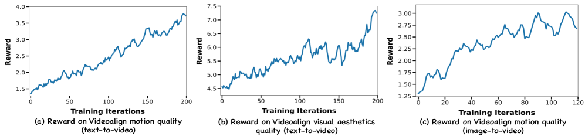
图 2：可视化 HunyuanVideo 上运动质量与视觉美学质量的训练曲线，以及 SkyReels-I2V 上运动质量的训练曲线。
HunyuanVideo. Optimizing text-to-video generation models presents significantly greater challenges compared to text-to-image frameworks, primarily due to elevated computational costs during training and inference, as well as slower convergence rates. In the pretraining protocol, we always adopt a progressive strategy: initial training focuses on text-to-image generation, followed by low-resolution video synthesis, and culminates in high-resolution video refinement. However, empirical observations reveal that relying solely on image-centric optimization leads to suboptimal video generation outcomes. To address this, our implementation employs training video samples synthesized at a resolution of 480×480 pixels, but we can visualize the samples with larger pixels.
HunyuanVideo。优化文本到视频生成模型的难度明显高于文本到图像框架，主要原因在于训练与推理的计算开销更大，收敛也更慢。在预训练方案中，我们始终采用渐进策略：先训练文本到图像生成，再进行低分辨率视频合成，最后做高分辨率视频精修。然而实证观察发现，仅依赖以图像为中心的优化会导致视频生成效果欠佳。为此，我们的实现采用 480×480 像素分辨率合成的训练视频样本，但可视化时可以使用更大的像素尺寸。
Furthermore, constructing an effective video reward model for training alignment poses substantial difficulties. Our experiments evaluated several candidates: the Videoscore [41] model exhibited unstable reward distributions, rendering it impractical for optimization, while Visionreward-Video [42], a 29-dimensional metric, yielded semantically coherent rewards but suffered from inaccuracies across individual dimensions. Consequently, we adopted VideoAlign [14], a multidimensional framework evaluating three critical aspects: visual aesthetics quality, motion quality, and text-video alignment. Notably, the text-video alignment dimension demonstrated significant instability, prompting its exclusion from our final analysis. We also increase the number of sampled frames per second for VideoAlign to improve the training stability. As illustrated in Figure 2(a) and Figure 2(b), our methodology achieves relative improvements of 56% and 181% in visual and motion quality metrics, respectively. Extended qualitative results are provided in the Table 3.1.
此外，构建一个有效的视频奖励模型用于训练对齐同样困难。我们评估了若干候选：Videoscore [41] 模型的奖励分布不稳定，无法用于优化；Visionreward-Video [42] 是一个 29 维指标，各维度奖励语义连贯但存在不准之处。因此我们采用 VideoAlign [14]——一个从视觉美学质量、运动质量与文本—视频对齐三个关键方面评估的多维框架。其中文本—视频对齐维度表现出明显不稳定性，故未纳入最终分析。我们还提高了 VideoAlign 每秒采样帧数，以提升训练稳定性。如图 2（a）与图 2（b）所示，本方法在视觉质量与运动质量指标上分别取得 56% 与 181% 的相对提升。更多定性结果见表 3.1。
SkyReels-I2V. SkyReels-I2V represents a state-of-the-art open-source image-to-video (I2V) generation framework, established as of February 2025 at the inception of this study. Derived from the HunyuanVideo architecture, the model is fine-tuned by integrating image conditions into the input concatenation process. A central finding of our investigation is that I2V models exclusively allow optimization of motion quality, encompassing motion coherence and aesthetic dynamics, since visual fidelity and text-video alignment are inherently constrained by the attributes of the input image rather than the parametric space of the model. Consequently, our optimization protocol leverages the motion quality metric from the VideoAlign reward model, achieving a 118% relative improvement in this dimension as shown in Figure 2(c). We must enable the CFG-training to ensure the sampling quality during the RLHF training process.
SkyReels-I2V。截至 2025 年 2 月本研究启动之时，SkyReels-I2V 是最先进的开源图像到视频（I2V）生成框架。该模型源自 HunyuanVideo 架构，通过在输入拼接过程中引入图像条件进行微调。本研究的一个核心发现是：I2V 模型只能对运动质量（含运动连贯性与美学动态）做优化，因为视觉保真度与文本—视频对齐本质上由输入图像的属性决定，而非模型的参数空间。因此，我们的优化方案采用 VideoAlign 奖励模型中的运动质量指标，在该维度上取得 118% 的相对提升，如图 2（c）所示。为保证 RLHF 训练过程中的采样质量，必须启用 CFG 训练。
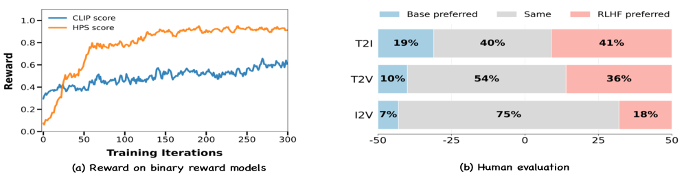
图 3：（a）可视化二值奖励的训练曲线。（b）分别展示 FLUX（T2I）、HunyuanVideo（T2V）与 SkyReel（I2V）上的人类评估结果。
We present the results of our human evaluation, conducted using in-house prompts and reference images. For text-to-image generation, we evaluate FLUX on 240 prompts. For text-to-video generation, we assess HunyuanVideo on 200 prompts, and for image-to-video generation, we test SkyReels-I2V on 200 prompts paired with their corresponding reference images. As shown in Figure 3(b), human artists consistently prefer outputs refined with RLHF. More visualization results can be found in Figure 10 in Appendix, and Appendix 11.
我们给出使用内部提示词与参考图像所做人工评估的结果。文本到图像生成方面，在 240 条提示词上评估 FLUX；文本到视频生成方面，在 200 条提示词上评估 HunyuanVideo；图像到视频生成方面，在 200 条提示词及其对应参考图像上测试 SkyReels-I2V。如图 3（b）所示，人类美术师一致更偏好经 RLHF 精修后的输出。更多可视化结果见附录图 10 与附录 11。
Ablation on Timestep Selection. As detailed in Section 2.2, we investigate the impact of timestep selection on the training dynamics of the HunyuanVideo-T2I model. We conduct an ablation study across three experimental conditions: (1) training exclusively on the first 30% of timesteps from noise, (2) training on randomly sampled 30% of timesteps, (3) training on the final 40% of timesteps before outputs, (4) training on randomly sampled 60% of timesteps, and (5) training on sampled 100% of timesteps. As shown in Figure 4(b), empirical results indicate that the initial 30% of timesteps are critical for learning foundational generative patterns, as evidenced by their disproportionate contribution to model performance. However, restricting training solely to this interval leads to performance degradation compared to full-sequence training, likely due to insufficient exposure to late-stage refinement dynamics.
时间步选择的消融。如 2.2 节所述，我们考察时间步选择对 HunyuanVideo-T2I 模型训练动态的影响，在五种实验条件下做消融：（1）仅训练从噪声端起前 30% 的时间步；（2）随机采样 30% 的时间步训练；（3）训练输出前最后 40% 的时间步；（4）随机采样 60% 的时间步训练；（5）采样 100% 的时间步训练。如图 4（b）所示，实证结果表明最初 30% 的时间步对学习基础生成模式至关重要，其对模型性能的贡献不成比例地大。然而，仅在该区间训练相比全序列训练会出现性能下降，可能源于对后期精修动态的学习不足。
To reconcile this trade-off between computational efficiency and model fidelity, we always implement a 40% stochastic timestep dropout strategy during training. This approach randomly masks 40% of timesteps across all phases while preserving temporal continuity in the latent diffusion process. The findings suggest that strategic timestep subsampling can optimize resource utilization in flow-based generative frameworks.
为在计算效率与模型保真度之间取得平衡，我们在训练中始终采用 40% 的随机时间步丢弃策略：在各阶段随机屏蔽 40% 的时间步，同时保持潜扩散过程中的时间连续性。这些发现说明，有策略的时间步子采样能够优化基于流的生成框架中的资源利用。
Ablation on Noise Level . We systematically investigate the impact of noise level during training on FLUX. Our analysis reveals that reducing leads to a significant performance degradation, as quantitatively demonstrated in Figure 4(c). Notably, experiments with alternative noise decay schedules (e.g., those used in DDPM) show no statistically significant differences in output quality compared to our baseline configuration. Futhermore, the noise level larger than 0.3 sometimes leads to noisy images after RLHF training.
噪声水平 的消融。我们在 FLUX 上系统考察训练时噪声水平 的影响。分析表明，降低 会导致性能显著下降，图 4（c）给出了量化结果。值得注意的是，改用其他噪声衰减调度（如 DDPM 所用）与我们的基线配置相比，在输出质量上并无统计学显著差异。此外，噪声水平大于 0.3 时，RLHF 训练后有时会产生噪声较多的图像。
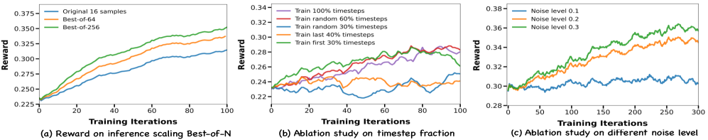
图 4：本图依次展示 Best-of-N 推理扩展上的奖励、时间步选择的消融与噪声水平的消融。尽管样本越多、Best-of-N 推理扩展越能稳定提升性能，但它会降低采样效率，因此我们把 Best-of-N 作为可选扩展。
Aligning Large Language Models. Large Language Models (LLMs) [43, 44, 45, 46, 47] are typically aligned with Reinforcement Learning from Human Feedback (RLHF) [48, 47, 46, 49, 50, 51]. RLHF involves training a reward function based on comparison data of model outputs to capture human preferences, which is then utilized in reinforcement learning to align the policy model. While some approaches leverage policy gradient methods, others focus on Direct Policy Optimization (DPO) [52]. Policy gradient methods have proven effective but are computationally expensive and require extensive hyperparameter tuning. In contrast, DPO offers a more cost-efficient alternative but consistently underperforms compared to policy gradient methods.
大语言模型对齐。大语言模型（LLM）[43, 44, 45, 46, 47] 通常通过基于人类反馈的强化学习（RLHF）[48, 47, 46, 49, 50, 51] 进行对齐。RLHF 先基于模型输出的比较数据训练一个奖励函数以捕捉人类偏好，再在强化学习中用该函数对齐策略模型。部分方法采用策略梯度，另一些则聚焦直接策略优化（DPO）[52]。策略梯度方法已被证明有效，但计算开销大，且需要大量超参数调优；DPO 成本更低，但性能始终不及策略梯度方法。
Recently, DeepSeek-R1 [20] demonstrated that the application of large-scale reinforcement learning with formatting and result-only reward functions can guide LLMs toward the self-emergence of thought processes, enabling human-like complex chain-of-thought reasoning. This approach has achieved significant advantages in complex reasoning tasks, showcasing immense potential in advancing reasoning capabilities within Large Language Models.
近期，DeepSeek-R1 [20] 证明，大规模强化学习配合格式奖励与仅基于结果的奖励函数，可以引导 LLM 自发涌现出思维过程，实现类人的复杂链式推理。该方法在复杂推理任务上取得显著优势，展现出推进大语言模型推理能力的巨大潜力。
Aligning Diffusion Models and Rectified Flows. Diffusion models and rectified flows can also benefit significantly from alignment with human feedback, but the exploration remains primitive compared with LLMs. Key approaches in this area include: (1) Direct Policy Optimization (DPO)-style [53, 14, 42, 54, 12] methods, (2) direct backpropagation with reward signals [55], such as ReFL [9], and (3) policy gradient-based methods, including DPOK [19] and DDPO [18]. However, production-level models predominantly rely on DPO and ReFL, as previous policy gradient methods have demonstrated instability when applied to large-scale settings. Our work addresses this limitation, providing a robust solution to enhance stability and scalability. We also hope our work offers insights into its potential to unify optimization paradigms across different modalities (e.g. image and text) [56, 57].
扩散模型与整流流的对齐。扩散模型与整流流同样能从人类反馈对齐中获益，但相比 LLM，相关探索仍处于初级阶段。该方向的主要方法包括：（1）直接策略优化（DPO）风格的方法 [53, 14, 42, 54, 12]；（2）用奖励信号直接反向传播 [55]，如 ReFL [9]；（3）基于策略梯度的方法，包括 DPOK [19] 与 DDPO [18]。然而工业级模型主要依赖 DPO 与 ReFL，因为先前的策略梯度方法在大规模场景下表现出不稳定性。本工作针对这一局限提供了稳健的解决方案，提升了稳定性与可扩展性。我们也希望本文能为统一不同模态（如图像与文本）的优化范式带来启示 [56, 57]。
This work pioneers the integration of Group Relative Policy Optimization (GRPO) into visual generation, establishing DanceGRPO as a unified framework for enhancing diffusion models and rectified flows across text-to-image, text-to-video, and image-to-video tasks. By bridging the gap between language and visual modalities, our approach addresses critical limitations of prior methods, achieving superior performance through efficient alignment with human preferences and robust scaling to complex, multi-task settings. Experiments demonstrate substantial improvements in visual fidelity, motion quality, and text-image alignment. Future work will explore GRPO’s extension to multimodal generation, further unifying optimization paradigms across Generative AI.
本工作率先把组相对策略优化（GRPO）引入视觉生成，确立了 DanceGRPO 这一统一框架，用于在文本到图像、文本到视频与图像到视频任务上增强扩散模型与整流流。通过弥合语言与视觉模态之间的鸿沟，本方法克服了先前方法的关键局限，凭借高效的人类偏好对齐以及对复杂多任务场景的稳健扩展取得了更优性能。实验表明，视觉保真度、运动质量与图文对齐均获得大幅提升。未来工作将探索把 GRPO 扩展到多模态生成，进一步统一生成式人工智能中的优化范式。
We provide detailed experimental settings in Table 6, which apply exclusively to training without classifier-free guidance (CFG). When enabling CFG, we configure one gradient update per iteration. Additionally, the sampling steps vary by model: we use 50 steps for Stable Diffusion, and 25 steps for FLUX and HunyuanVideo.
表 6 给出详细的实验设置，这些设置仅适用于不使用无分类器引导（CFG）的训练。启用 CFG 时，我们配置为每次迭代做一次梯度更新。此外，各模型的采样步数不同：Stable Diffusion 用 50 步，FLUX 与 HunyuanVideo 用 25 步。
表 6：我们的超参数。
| Learning rate | 1e-5 |
| Optimizer | AdamW |
| Gradient clip norm | 1.0 |
| Prompts per iteration | 32 |
| Images per prompt | 12 |
| Gradient updates per iteration | 4 |
| Clip range | 1e-4 |
| Noise level | 0.3 |
| Timestep Selection | 0.6 |
The stochastic interpolant framework, introduced by [33], offers a unifying perspective on generative models like rectified flows and score-based diffusion models. It achieves this by constructing a continuous-time stochastic process that bridges any two arbitrary probability densities, and .
[33] 提出的随机插值（stochastic interpolant）框架为整流流、基于分数的扩散模型等生成模型提供了统一视角。它通过构造一个连续时间随机过程，在任意两个概率密度 与 之间架起桥梁。
In our work, we connect with a specific type of stochastic interpolant known as spatially linear interpolants, defined in Section 4 of [33]. Given densities , a spatially linear stochastic interpolant process is defined as:
本文关联到一类特殊的随机插值，即 [33] 第 4 节定义的空间线性插值。给定密度 ，空间线性随机插值过程 定义为：
| (11) |
where , , and is a standard Gaussian random variable independent of and . The functions are sufficiently smooth and satisfy the boundary conditions:
其中 、，且 是独立于 与 的标准高斯随机变量。函数 足够光滑，并满足如下边界条件：
| (12) |
with the additional constraint that for . The term introduces latent noise, smoothing the path between densities.
另附加约束：对 有 。项 引入潜噪声，使密度之间的路径更平滑。
Specific choices within this framework recover familiar models:
在该框架下，特定取值可还原出熟悉的模型：
• 整流流（RF）：令 （去掉潜噪声）、 与 ，即得整流流 [6, 33] 所用的线性插值 。其动态通常由 ODE 支配，其中 为学到的速度场。
• 基于分数的扩散模型（SBDM）：该框架通过单侧线性插值（[33] 第 4.4 节）与 SBDM 相连，其中 通常为高斯分布。插值形式为 。经过时间重参数化后，VP-SDE 表述 [31] 对应取 与 。
A pivotal insight is that: "The law of the interpolant at any time can be realized by many different processes, including an ODE and forward and backward SDEs whose drifts can be learned from data."
一个关键认识是：“插值 在任意时刻 的分布律可由许多不同过程实现，包括一个 ODE，以及漂移项可从数据中学习的前向与后向 SDE。”
The stochastic interpolant framework provides a probability flow ODE for RF:
随机插值框架为 RF 提供了一个概率流 ODE：
| (13) |
The backward SDE associated with the interpolant’s density evolution is given by:
与插值密度演化相关的后向 SDE 为：
| (14) |
where is the backward drift, is the score function, and is a tunable diffusion coefficient (noise schedule). If we set , the backward SDE becomes:
其中 为后向漂移， 为分数函数， 为可调的扩散系数（噪声调度）。若取 ，后向 SDE 变为：
| (15) |
which is the same as [34].
这与 [34] 一致。
We aim to demonstrate the equivalence between certain formulations of diffusion models and flow matching (specifically, stochastic interpolants) by deriving the hyperparameters of one model from the other.
我们希望通过从一个模型推导另一个模型的超参数，来证明扩散模型的某些表述与流匹配（具体是随机插值）之间的等价性。
The forward process of a diffusion model is described by an SDE:
扩散模型的前向过程由如下 SDE 描述：
| (16) |
where is a Brownian motion, and define the noise schedule.
其中 为布朗运动， 定义噪声调度。
The corresponding generative (reverse) process SDE is given by:
相应的生成（反向）过程 SDE 为：
| (17) |
where is the marginal probability density of at time .
其中 是 在时刻 的边缘概率密度。
For flow matching, we consider an interpolant path between data and noise (typically ):
对于流匹配，我们考虑数据 与噪声 （通常取 ）之间的插值路径：
| (18) |
This path satisfies the ODE:
该路径满足如下 ODE：
| (19) |
This can be generalized to a stochastic interpolant SDE:
它可推广为随机插值 SDE：
| (20) |
The core idea is to match the marginal distributions generated by the forward diffusion process Eq.(16) with those implied by the interpolant path Eq.(18). We will derive and from this requirement, and then relate the noise terms of the generative SDEs Eq.(17) and Eq.(20) to find .
核心思想是让前向扩散过程式（16）产生的边缘分布 与插值路径式（18）所隐含的边缘分布相匹配。我们将由此推导 与 ，再通过关联生成 SDE 式（17）与式（20）的噪声项来求解 。
Deriving by Matching Means. From Eq.(18), assuming is fixed and , the mean of is . The mean of the process Eq.(16) starting from satisfies the ODE . We require for all . Substituting into the mean ODE:
通过匹配均值推导 。由式（18），假定 固定且 ，则 的均值为 。从 出发的过程式（16）的均值 满足 ODE 。我们要求对所有 都有 。代入均值 ODE：
| (21) |
Assuming this holds for any and , we divide by :
假定该式对任意 与 成立，两边同除 ：
| (22) |
Using the identity , we get:
利用恒等式 ，可得：
| (23) |
Deriving by Matching Variances. From Eq.(18), assuming is fixed and (identity matrix for standard Gaussian noise), the variance (covariance matrix) of is . Let be the scalar variance magnitude. The variance for the process Eq.(16) evolves according to the Lyapunov equation: (Here, represents the magnitude of the noise injection rate). We require . Substitute and into the variance evolution equation:
通过匹配方差推导 。由式（18），假定 固定且 （标准高斯噪声对应单位矩阵）， 的方差（协方差矩阵）为 。记 为标量方差幅度。过程式（16）的方差 按如下 Lyapunov 方程演化：（其中 表示噪声注入速率的幅度）。我们要求 。把 与 代入方差演化方程：
| (24) |
Solving for :
解出 ：
| (25) |
Using the quotient rule for differentiation, , which implies . Then we get:
利用求导的商法则 ，可知 。于是得到：
| (26) |
Thus, we have:
因此，我们有：
| (27) |
Deriving by Matching Noise Terms in Generative SDEs. We compare the coefficients of the Brownian motion term () in the reverse diffusion SDE Eq.(17) and the stochastic interpolant SDE Eq.(20). The diffusion coefficient (magnitude of the noise term) is . The diffusion coefficient is . To match the noise structure in these specific SDE forms, we set : . Solving for (assuming ):. Substitute using the result from Eq.(27):
通过匹配生成 SDE 中的噪声项推导 。我们比较反向扩散 SDE 式（17）与随机插值 SDE 式（20）中布朗运动项（）的系数。扩散系数（噪声项的幅度）为 ，扩散系数为 。为使这两个 SDE 形式中的噪声结构相匹配，令 ：。解出 （假定 ）：。用式（27）的结果代入 ：
| (28) |
Summary of Results. By requiring the forward diffusion process Eq.(16) to match the marginal mean and variance of the interpolant path Eq.(18) at all times , we derived:
结果汇总。通过要求前向扩散过程式（16）在所有时刻 上与插值路径式（18）的边缘均值与方差相匹配，我们推导出：
| (29) |
These relationships establish the equivalence between the parameters of the two frameworks under the specified conditions.
这些关系在给定条件下确立了两个框架参数之间的等价性。
Classifier-Free Guidance (CFG) [35] is a widely adopted technique for generating high-quality samples in conditional generative modeling. However, in our settings, integrating CFG into training pipelines introduces instability during optimization. To mitigate this, we empirically recommend disabling CFG during the sampling phase for models with high sample fidelity, such as HunyuanVideo and FLUX, as it reduces gradient oscillation while preserving output quality.
无分类器引导（CFG）[35] 是条件生成建模中广泛用于生成高质量样本的技术。然而在我们的设定下，把 CFG 集成进训练流程会引入优化不稳定。为缓解这一点，我们依据经验建议：对 HunyuanVideo、FLUX 等样本保真度较高的模型，在采样阶段关闭 CFG，这样可在保持输出质量的同时减少梯度振荡。
For CFG-dependent models like SkyReels-I2V and Stable Diffusion, where CFG is critical for reasonable sample quality, we identify a key instability: training exclusively on the conditional objective leads to divergent optimization trajectories. This necessitates the joint optimization of both conditional and unconditional outputs, effectively doubling VRAM consumption due to dual-network computations. Morever, we propose reducing the frequency of parameter updates per training iteration. For instance, empirical validation shows that limiting updates to one per iteration significantly enhances training stability for SkyReels-I2V, with minimal impact on convergence rates.
对于 SkyReels-I2V、Stable Diffusion 等依赖 CFG 的模型——CFG 对其合理的样本质量至关重要——我们发现一处关键的不稳定源：仅针对条件目标训练会导致优化轨迹发散。这要求同时优化条件与无条件两条输出，由于需要双网络计算，显存消耗实际上翻倍。此外，我们建议降低每次训练迭代的参数更新频率。例如，实证验证表明，把 SkyReels-I2V 的每轮更新限制为一次可显著提升训练稳定性，且对收敛速度影响很小。
Our approach differs from prior RL-based methods for text-to-image diffusion models (e.g., DDPO, DPOK) in three key aspects: (1) We employ a GRPO-style objective function, (2) we compute advantages within prompt-level groups rather than globally, (3) we ensure noise consistency across samples from the same prompt, (4) we generalize these improvements beyond diffusion models by applying them to rectified flows and scaling to video generation tasks.
本方法与此前面向文本到图像扩散模型的 RL 方法（如 DDPO、DPOK）在三个关键方面有所不同：（1）采用 GRPO 风格的目标函数；（2）在提示词级别的组内计算优势，而非全局计算；（3）保证同一提示词各样本之间的噪声一致性；（4）把这些改进从扩散模型推广到整流流，并扩展到视频生成任务。
We also insert DDPO-style objective function into rectified flow SDEs, but it always diverges, as shown in Figure 5, which demonstrates the superiority of DanceGRPO.
我们也把 DDPO 风格的目标函数引入整流流 SDE，但它总会发散，如图 5 所示，这体现了 DanceGRPO 的优越性。
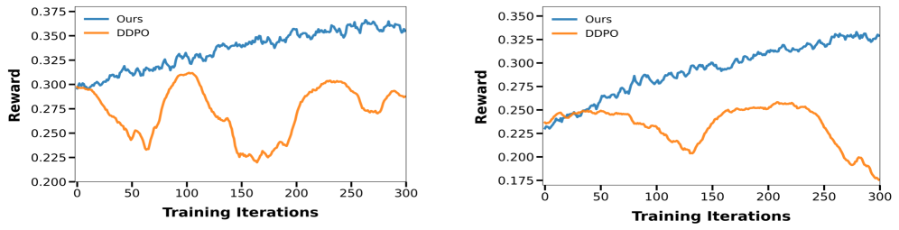
图 5：可视化 DDPO 与本方法的结果。DDPO 应用于整流流 SDE 时总会发散。
We provide more visualization results on FLUX, Stable Diffusion, and HunyuanVideo as shown in Figure 6, 7, 10, 11, 12, 13, 14, 15, 16, 17, and 18.
我们在图 6、7、10、11、12、13、14、15、16、17 与 18 中给出 FLUX、Stable Diffusion 与 HunyuanVideo 的更多可视化结果。
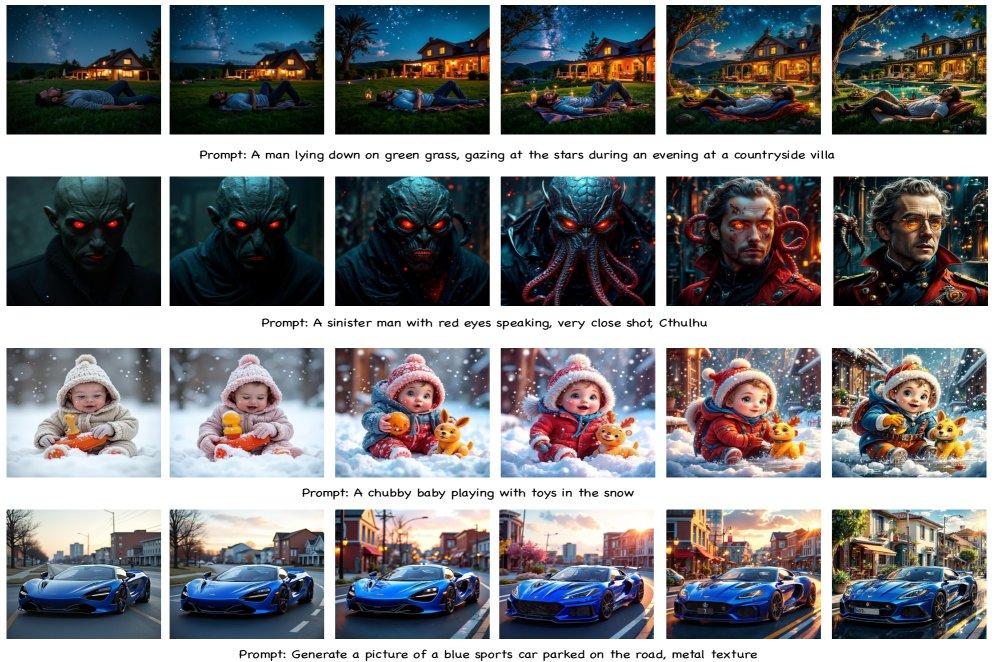
图 6：可视化 FLUX 在以 HPS 分数优化时第 0、60、120、180、240 与 300 次迭代的结果。优化后的输出往往色调更明亮、细节更丰富。然而引入 CLIP score 正则化至关重要，如图 11、12、13 所示。
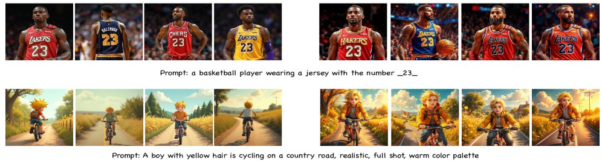
图 7：RLHF 前后模型多样性的可视化。RLHF 之后，不同随机种子倾向于生成相似的图像。
图 8：在 HunyuanVideo 上可视化发生奖励破解（使用不同初始化噪声）与未发生奖励破解（使用相同初始化噪声）的结果。提示词：A splash of water in a clear glass, with sparkling, clear radiant reflections, sunlight, sparkle
图 9：本图展示 CLIP score 的作用。提示词为“A photo of cup”。我们发现，仅用 HPS-v2.1 奖励训练的模型倾向于产生不自然（“油润”）的输出，而引入 CLIP score 有助于保持更自然的图像特征。
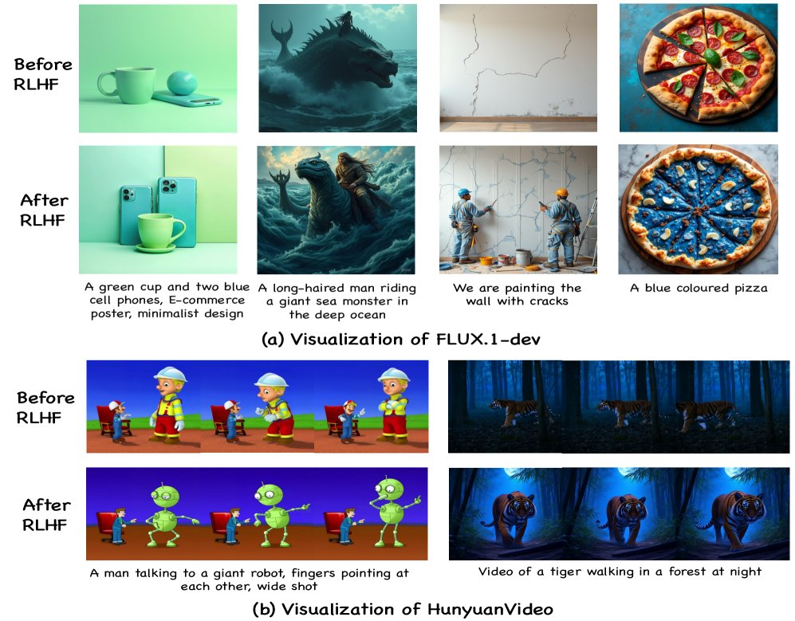
图 10：整体可视化。我们给出 FLUX 与 HunyuanVideo 在 RLHF 前后的结果。
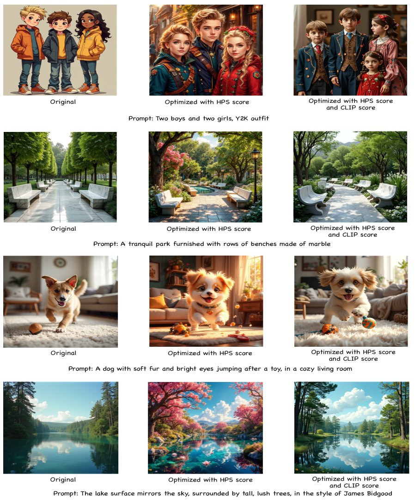
图 11：给出 FLUX 的原始输出，以及仅由 HPS 分数驱动和由 HPS 与 CLIP 分数共同增强的优化结果。
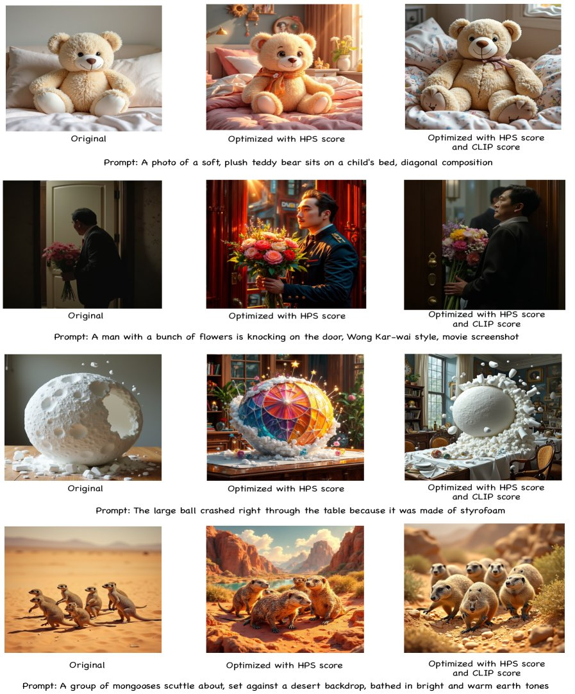
图 12：给出 FLUX 的原始输出，以及仅由 HPS 分数驱动和由 HPS 与 CLIP 分数共同增强的优化结果。
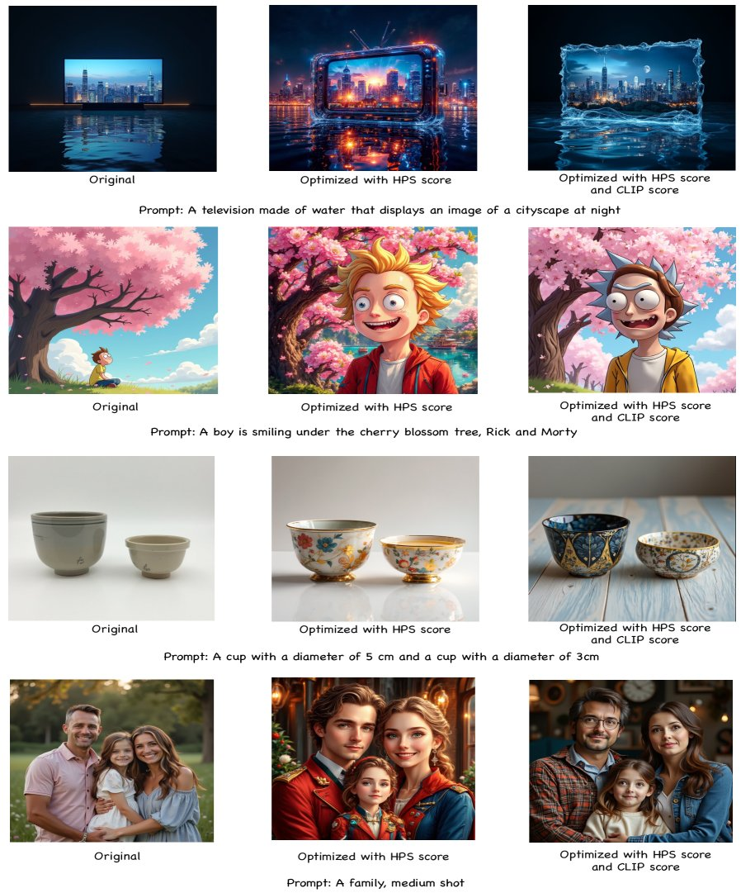
图 13：给出 FLUX 的原始输出，以及仅由 HPS 分数驱动和由 HPS 与 CLIP 分数共同增强的优化结果。
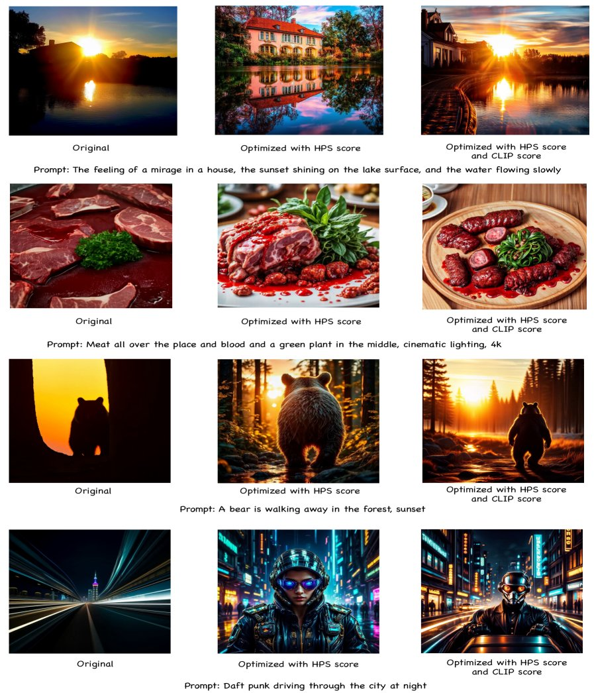
图 14：给出 HunyuanVideo-T2I 的原始输出，以及仅由 HPS 分数驱动和由 HPS 与 CLIP 分数共同增强的优化结果。
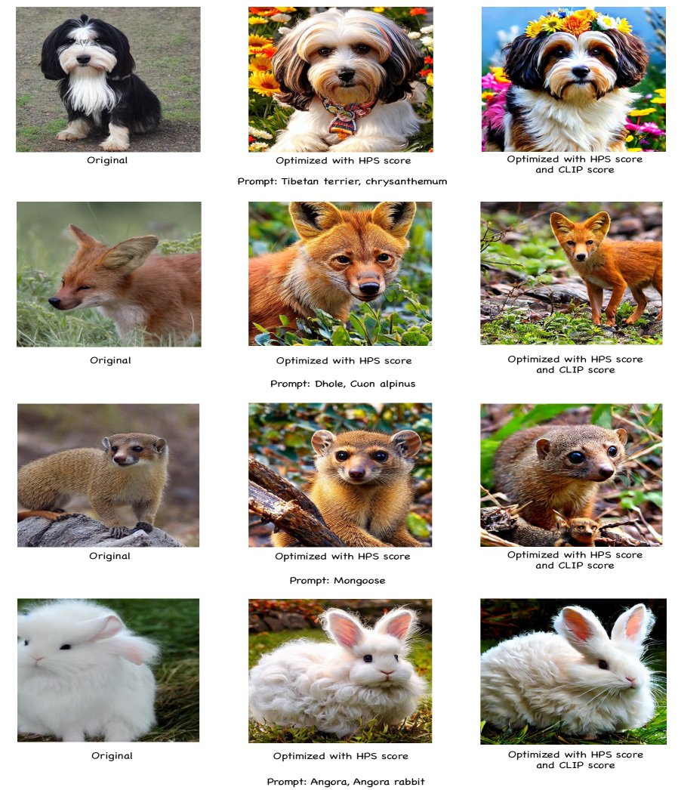
图 15：给出 Stable Diffusion 的原始输出，以及仅由 HPS 分数驱动和由 HPS 与 CLIP 分数共同增强的优化结果。
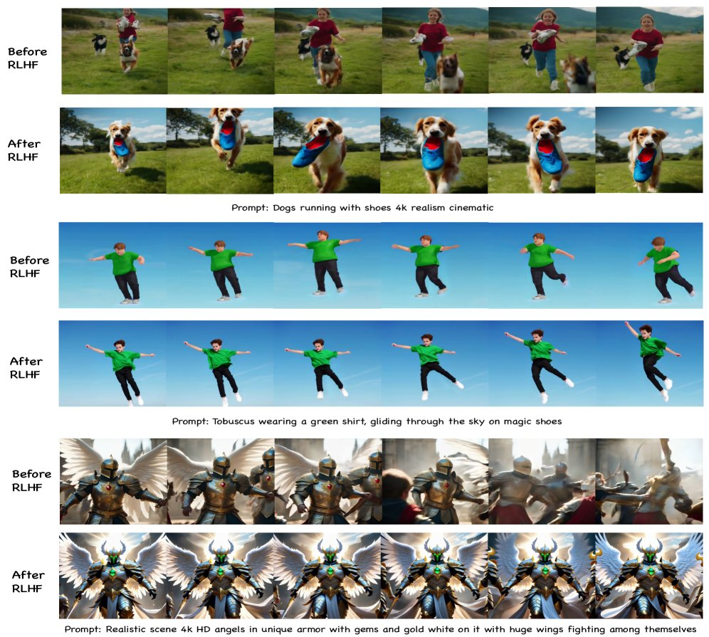
图 16：HunyuanVideo 的可视化结果。
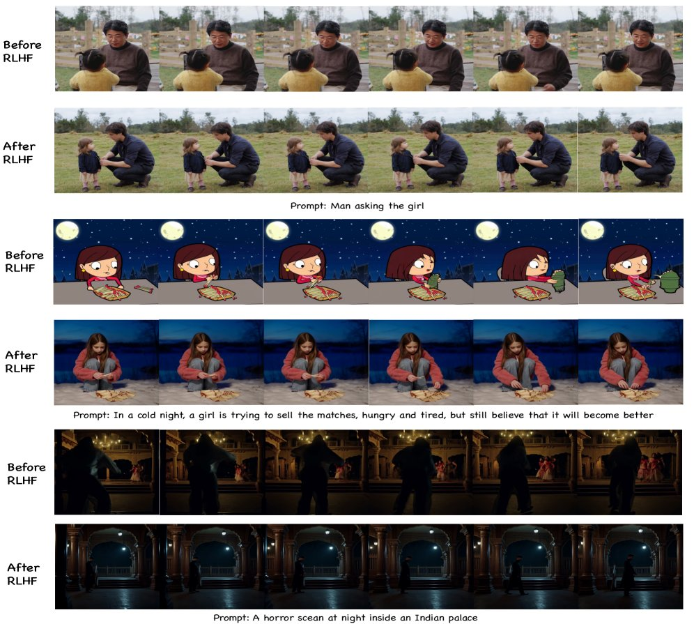
图 17：HunyuanVideo 的可视化结果。
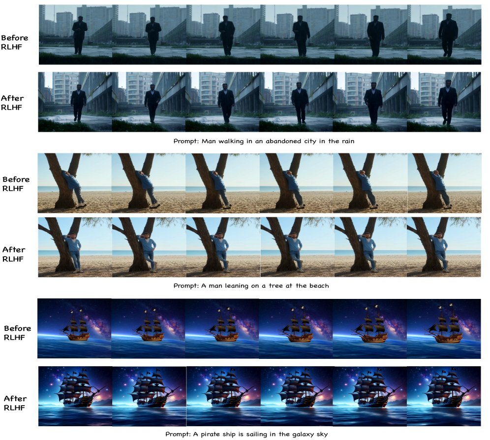
图 18：HunyuanVideo 的可视化结果。
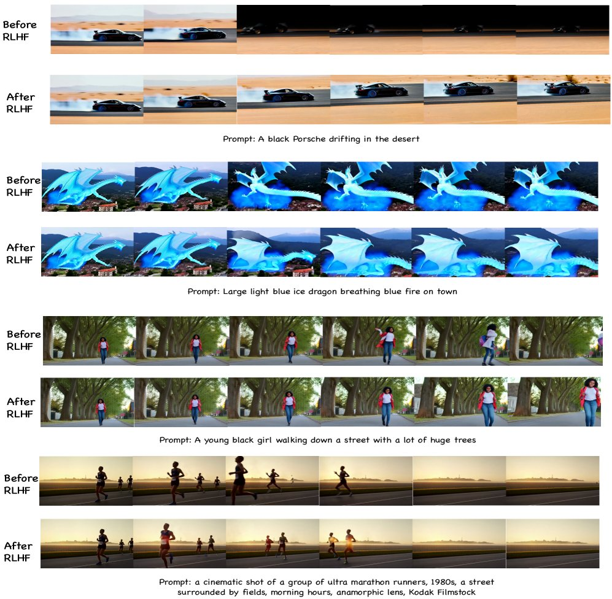
图 19：SkyReels-I2V 的可视化结果。